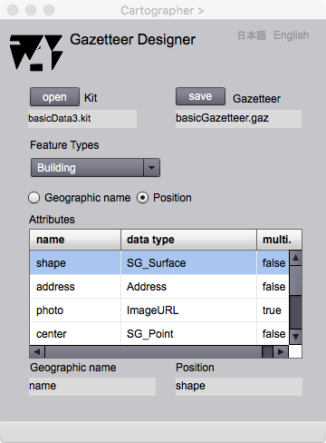

Gazetteer Designer
地名索引
地図帳やガイドブックの巻末には大抵地名索引があります．地名や有名な施設の名前と，それが示されているページ，さらにはその場所を示すセルの位置 (A-3など)が一覧表の形で示されています．この 地名索引は英語で geographic index などと言いますが，gazetteerとも言います．地名辞典も，英語ではgazetteer や geographic name dictionary といいます．似た言葉として gazztte がありますが，こちらは新聞や雑誌のことをさします．しかし両者ともに，どこに何が起きているかを知らせてくれる機能をもっています．ところで，地球上の位置を示す指標を地理識別子といいます．広い意味では座標も地理識別子ですが，一般的には地名や地番など，その場所を一意に識別する符号を指します．しかし例えば「加山さんの家」といっても，親しい人にしかその場所をイメージしてもらえないので，より共通的な識別子と組み合わせで地理識別子とするといいでしょう．このような，地理識別子を集めた索引（または辞典）のことをGazetteerと呼びます．座標参照系は，連続的な数字を指標を使うので，連続的な空間参照系といえます．一方，Gazetteerは，地名や住所などの符号による空間参照の仕組みなので，離散的な空間参照系といえます．地理識別子による空間参照については，講義用スライド「09 参照系」も参考にしてください．
さて，Gezetteer Designer では，地物の属性になっている名前や住所などと，同じ地物の幾何属性を選択して，その中心位置をもとめ，地名索引を出力することができます．この地名索引は，MapEditor で作成された地図上で使用されます．
地名索引スキーマ
地名索引スキーマは，二つのクラスからなります．GazetteerType は，地名索引を定義するクラスです．GazetteerItem は，地物を示す名前 (geoName) と対応する座標 (position) の組み合わせです．このアイテムの集まりはgazetteerItemList と呼ばれます．
図１．地名索引スキーマの構成
CLASSES
GazetteerType
地名索引スキーマのルートクラスです．索引をつける kit のURL（実際にはファイル名），索引の対象になる地物の型(fatureType)，地名になる属性の型 (geoNameType) ，位置を示すための座標の型 (positionType) 示し，地名索引項目 (GazetteerItem) の集まりである gazetteerItemList をもちます．
GazetteerItem
それぞれの地物インスタンンスの地名と位置座標の向き合わせです．地名索引に地名が投入されると，一致する項目をgazetteerItemList の中から探し，見つけると，地図は，その位置が中心になるように平行移動します．地名とその位置の組み合わせは，ソシュールが定義したシニフィアンとシニフィエの組み合わせに似ています．シニフィアンは，例えば「海」のような，何かを指し示す言葉，シニフィエとは，海の写真や海の解説など，シニフィアンから連想されるイメージや意味内容のことです．Gazetteer item では地名はシニフィアン，位置はシニフィエでしょうか．ソシュールはシニフィアンとシニフィエの組みのことをシーニュ，つまり記号 (sign) といったそうです．
ROLL NAMES
gazetteerItemList
地名索引アイテムの集まり．これが地名索引(geographic index) の本体を構成する．
操作画面

図２．Gazetteer Designer の操作画面
表示欄
Kit
地名索引の対象になるキットのファイル名が表示されます．
Gazetteer
地名索引のファイル名が表示されます．
Feature Types
Kitに含まれる地物の型名が示されますので，ユーザは索引の対象となる地物型を選択します．
Attributes
地物に含まれる属性の一覧が表示されます．
Geographic name
地物を指し示す名前が表示されます．
Position
地物の位置を示す属性の名前が表示されます．
ボタン
open (Kit)
Kit をオープンします．
open (Gazetteer)
地名索引をオープンします．
save (gazetteer)
地名索引をセーブします．
Geographic name
このラジオボタンを選択した後で，Attributesグリッド上で．属性を選択すると，それが地名用の属性になります．
Position
このラジオボタンを選択した後で，Attributesグリッド上で，属性を選択すると．それが位置属性になります．
日本語
今あなたが読んでいるドキュメントが表示されます．
English
You can read the tutorial written in English.